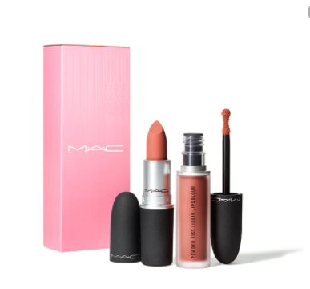
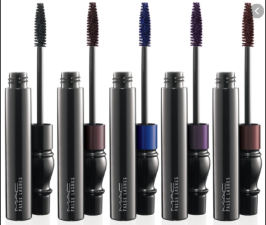

Reseñas
|
Para iniciar, me gustaría mencionar el labial más famoso del mundo, y el más reseñado
en Bellezacheck, Lisptick de Mac Cosmetics, es muy conocido gracias a su empaque minimalista,
y elegante; como también por su diversidad de tonos, y que sin duda, el favorito es: Ruby Woo,
un rojo totalmente neutro para pieles cálidas, y frías. En nuestro país es de los más vendidos.
Otro de los productos favoritos y mejor reseñados de Mac Cosmetics, es Spray facial Prep +
Prime Fix +, sin duda se ha colocado en el corazón del público, y de muchos maquillistas
profesionales, ya que ayuda a que el look de maquillaje quede intacto por horas, y que todos
los acabados y detalles se prolonguen.
|
Por otro lado, si te gusta más la idea de probar maquillaje, tienes que poner a prueba
la Base de maquillaje Studio Fix SPF 15 de Mac Cosmetics, tiene acabado natural y mate.
La cobertura es media a total, de larga duración y uno de sus principales objetivos
es minimizar el aspectos de los poros.
Para enfatizar nuestra mirada, no puede faltar un producto como Mascara False Lashes
de Mac Cosmetics, es conocida por su fórmula gelosa, que ayuda a que las pestañas tengan
un mayor volumen e intensidad. Si te encantan que las mascaras de pestañas sean a aprueba
de agua, entonces deberías ponerla a prueba. Cabe destacar que si eres más con el gusto
de que tus pestañas sean ligeras, no es la mejor opción para ti.
|
|  |
 |